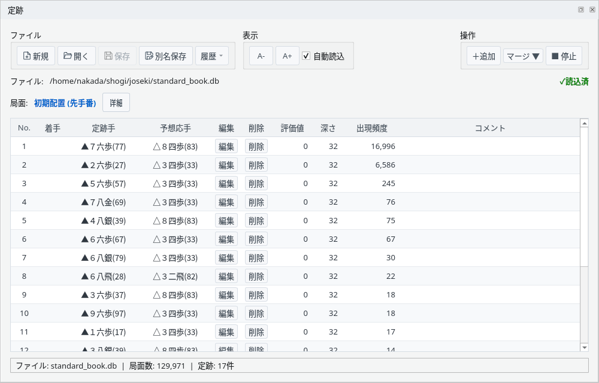
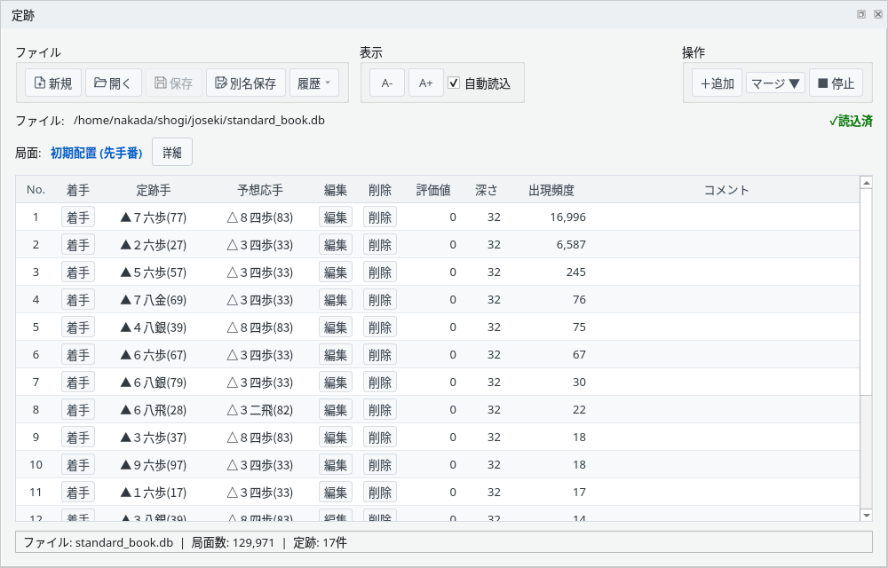
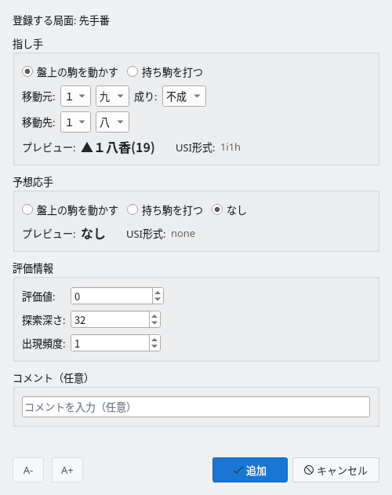
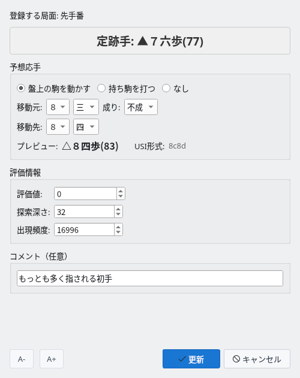
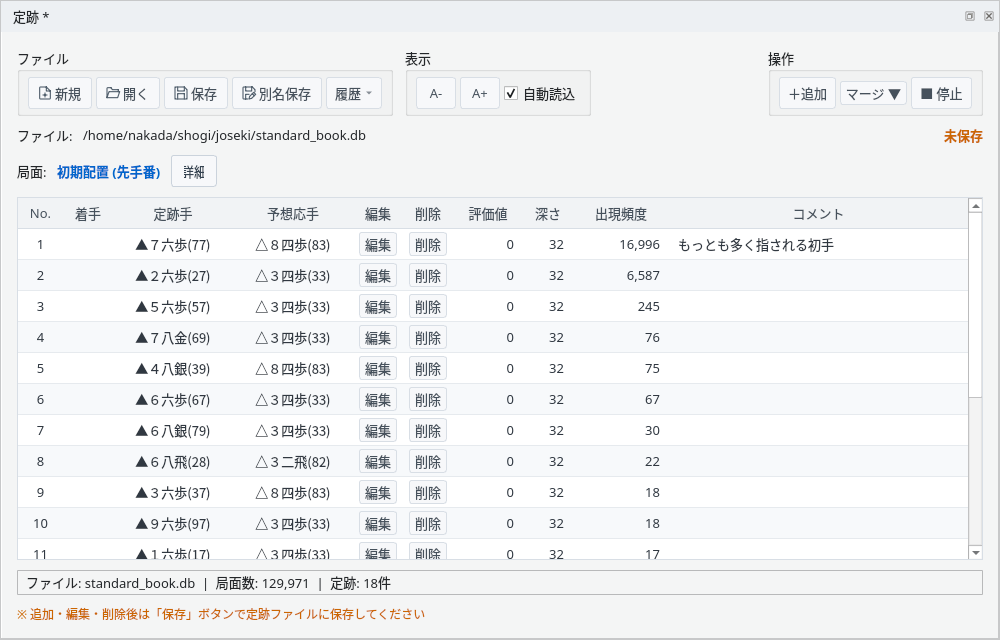
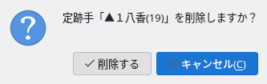
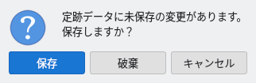
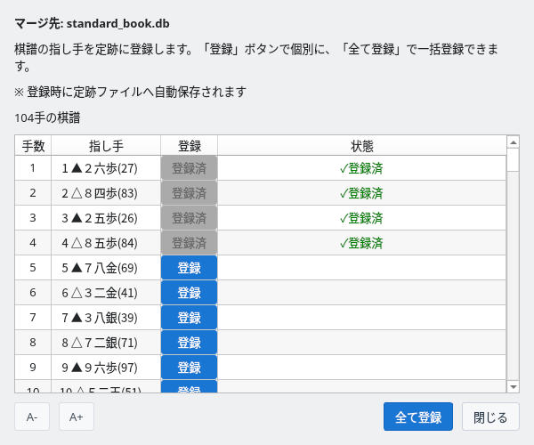

やねうら王形式の定跡ファイルを表示・編集
定跡ウィンドウで定跡ファイルを開き、表示中の局面の定跡手を確認します
「表示」→「定跡」で定跡ウィンドウを表示します。最初は画面下部のタブに入ります。表が狭いときは、パネルを広げるか別ウィンドウにすると見やすくなります（ドック機能のガイドを参照）。
「開く」で、やねうら王形式（#YANEURAOU-DB2016）の定跡ファイル（.db）を選びます。やねうら王に付属の standard_book.db なども読み込めます。「新規」で空の定跡を作ることもできます。「履歴」からは最近使ったファイルを開けます。「自動読込」にチェックを付けておくと、次から定跡ウィンドウを表示したときに前回のファイルを読み込みます。

定跡ウィンドウ：standard_book.db を開いた初期局面
表示中の局面に登録されている定跡手が、ファイルに書かれた順に並びます。
棋譜欄で手を選んだり、対局で手が進んだりすると、その局面の定跡手に切り替わります。手数は区別しないので、同じ局面なら同じ定跡手が表示されます。
「詳細」を押すと局面と定跡のSFENを表示します。「■ 停止」で定跡の表示を止め、「▶ 再開」で再開します。いちばん下の行には、ファイル名・局面数・この局面の定跡手の数が表示されます。定跡ファイルを開いていないときや、その局面の定跡がないときは、表の中に案内が表示されます。
対局中は、自分の手番で定跡手をそのまま指せます
対局中、自分の手番になると「着手」列にボタンが表示されます。ボタンを押すか行をダブルクリックすると、その定跡手を指します（成る・成らないも定跡のとおり）。指した手は、盤面で指した手と同じく棋譜に記録されます。
エンジンの手番、エンジン同士の対局、対局していないときは「着手」列が空になり、定跡手は指せません。

対局中：自分の手番では「着手」ボタンで定跡手を指せる
定跡手を追加・編集・削除し、定跡ファイルに保存します
「＋追加」で、表示中の局面に定跡手を追加します。指し手は「盤上の駒を動かす」か「持ち駒を打つ」を選んで移動元・移動先を指定し、プレビューで確認します。予想応手は「なし」も選べます。
その局面で指せない手を入力している間は「追加」を押せません。同じ指し手がすでに登録されているときは、上書きするかの確認が表示されます。

定跡手の追加：指し手をプレビューで確認して追加する
「編集」で、予想応手・評価値・探索深さ・出現頻度・コメントを変更します（指し手そのものは変えられません）。表の行を右クリックすると、着手・編集・削除・指し手のコピーのメニューも使えます。
変更すると、ファイル名の右に「未保存」と、保存を促す案内が表示されます。

定跡手の編集：評価値・探索深さ・出現頻度・コメントを変更

編集後：コメントが付き、「未保存」と保存の案内が表示される
「削除」を押すと確認が表示され、「削除する」で定跡手を削除します。
変更は「保存」（上書き）または「別名保存」で定跡ファイルに書き込みます。未保存の変更があるまま「新規」「開く」「履歴」で別のファイルに切り替えたり、定跡ウィンドウやアプリを閉じたりすると、保存するかの確認が表示されます。

削除の確認

未保存の変更があるときの確認
棋譜の指し手をまとめて定跡に登録します
「マージ ▼」→「現在の棋譜から」または「棋譜ファイルから」（KIF形式）を選ぶと、棋譜の本譜の指し手（先手・後手とも）が一覧で表示されます。「登録」で1手ずつ、「全て登録」でまとめて定跡に登録します。
新しい指し手は予想応手なし・評価値0・深さ0・出現頻度1で登録され、すでにある指し手は出現頻度が1増えます。登録すると定跡ファイルにすぐ保存されます（ほかの未保存の変更も一緒に保存されます）。まだ保存していない新しい定跡の場合は、先に保存先を指定します。「✓登録済」は、このファイルを開いてから登録した指し手を示します。

マージ：棋譜の指し手を1手ずつ、またはまとめて登録する